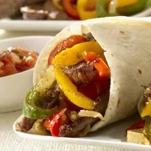

Sizzling Steak Fajitas

Description
Tex-Mex perfection for everyone! Fajitas are fun for everyone.
Enjoy this Tex-Mex recipe at home--throw a fajita party where your friends and family build their own fajitas and make memories that last.
Our fajitas recipe relies on GOYA® Mojo Criollo as a flavorful marinade that delivers juicy, tender meat, and GOYA® Flour Tortillas for a pocket everyone can pick up.
Ingredients:
- 3 pounds flank or skirt steak, cut against the grain into 1/2-inch thick strips
- 1.5 cups Goya Mojo Criollo
- 1 teaspoon Goya Adobo with Pepper, plus more to taste
- 2 tablespoons Goya Extra Virgin Olive Oil
- 1 large yellow onion, cut into 1/4-inch strips
- 2 red, green, and/or yellow bell peppers, cut into 1/4-inch thick strips
- 1 teaspoon Goya Sazonador Total
- 1 (18 ounce) package Goya Flour Tortillas, warmed
Steps:
- In medium container with lid, or in large ziptop bag, combine steak slices, Mojo and 1 tsp. Adobo; transfer to refrigerator. Marinate at least 2 hours, or up to 24 hours. Drain steak, discarding marinade. Bring meat to room temperature.
- Heat 1 tbsp. oil in large skillet over high heat. Add onions; cook, stirring occasionally, until starting to brown, about 3 minutes. Add peppers to pan. Cook, stirring occasionally, until starting to brown, about 3 minutes more. Season vegetables with sazonador total and adobo; transfer to large serving platter. Cover vegetables with foil to keep warm.
- Heat remaining oil in skillet over high heat. Add beef; cook, in batches, until brown on all sides, about 10 minutes. Transfer meat to serving platter.
- To serve, spoon meat and vegetables into center of warm tortillas. Add guacamole, pico de gallo, sour cream and salsita, if desired; wrap and enjoy.